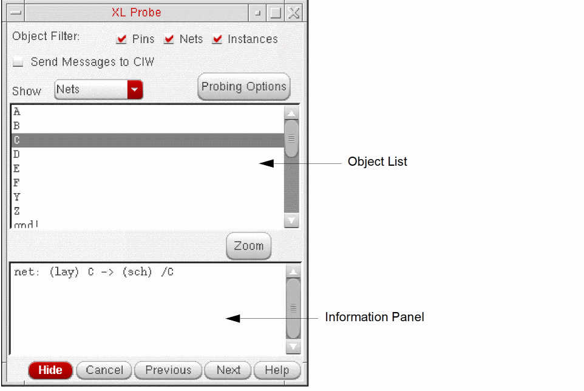

Probing Objects by Clicking in a Window
To probe an object by clicking in either the layout or schematic window,
-
From the layout window menu bar, choose Connectivity – XL Probe.
The XL Probe form is displayed.
 -
In the Object Filter section, specify the types of objects that can be probed when you click in the layout or schematic window.
For example, if you check only Pins, you can create probes only for pin objects by clicking in either window. Clicking on a net or instance has no effect. You can use this option to prevent certain types of objects from being probed in congested areas of your design.
This option has no effect on probe creation using the object list in the XL Probe form, only on probe creation by clicking in the layout or schematic window. -
Click the object you want to probe in either the schematic or layout window.
If you click a pin, Layout XL probes only thepinFigs associated with the pin. If you click a net, Layout XL probes all the shapes on the specified net, including routing shapes andpinFigs.
Information on the probed object is printed to the Information Panel in the XL Probe form and the relevant objects are highlighted in the schematic and layout windows. - Adjust the probing behavior as required using the options on the form.
Exiting the Probe Command
Removing Probes
To remove an individual probe from the layout:
To remove all probes from the layout and schematic windows, do one of the following.
- Click an empty space in the layout canvas.
-
Press
Ctrl+lor run the following SKILL command in the CIW.
lxProbeRemoveAll()
Related Topics
Return to top